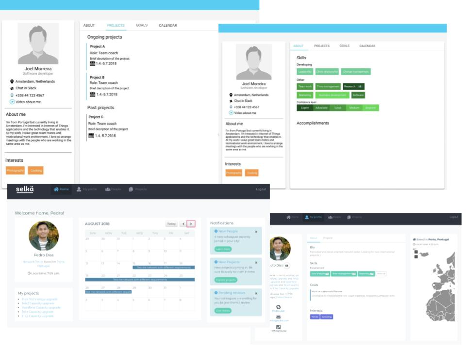

What is the next generation of project management in a large global company?
ME310 New Product Development course @AaltoUni
Client: Nokia Networks
Design process
We followed the d.school design thinking methodology that consists of iterative process of defining the problem, needfinding and benchmarking, brainstorming, prototyping and testing. We did user research with project managers, workers and mobile operators to understand their work and needs to deliver projects.
In addition we benchmarked a lot of project management tools to find out their best parts and what is still missing. We explored trends that are coming in the next 10-15 years to design a solution that would fit the needs of future workers and take advantage of the evolving technology.
We did a lot of prototypes to test our assumptions and to generate insights. These prototypes included for example testing experiences, making wireframes, creating clickable prototypes with Figma and arranging test where a child would lead a project.
My role in the project was to do user research with the operators and designing the prototypes as well as testing those with real users. In addition, I created clickable prototypes with Figma to gain insights about what the workers want to see in their profiles and on their front page.
UI development.
Result
We designed a digital home for future workers who value self-development, connection with other co-workers and transparency between all stakeholders. The final design connects people with projects according to workers profile and goals.
In addition we included the client's view to the final prototype, since we find out that it is important for customers to recieve real-time information about the projects and usually receiving that kind of information might take a long time and it should be always available. The prototype of the final design concept can be found here.

Brochure of the final concept, Selkä.
Aftermath
During the 6 months I learned a lot about how to plan prototypes and think about what is important to do and why. In addition I learned how important is to communicate with team members especially when other half of the team is abroad. Since the design challenge was so broad it was first hard to define the real problem but in the end we gained a lot of positive feedback that we focues on the people side and designed a solution which concentrates on people compared to the project management tools which are available nowadays.